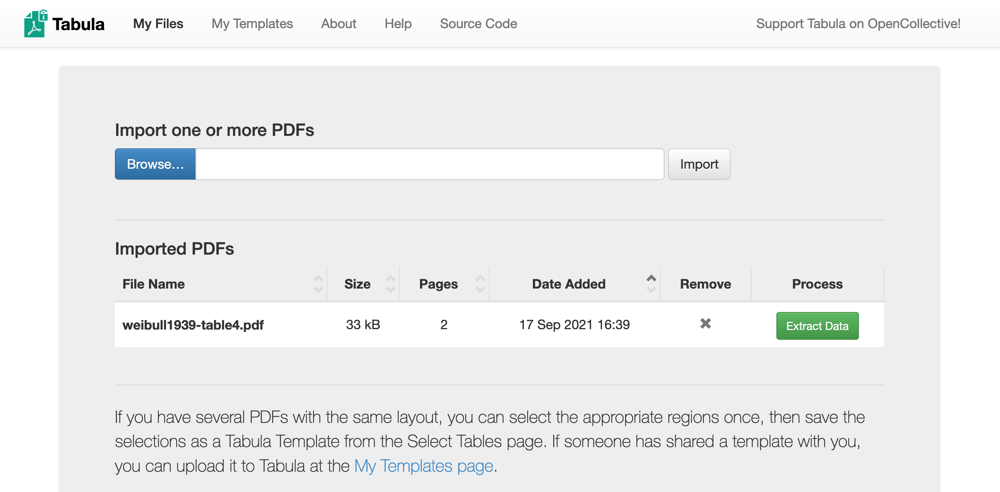
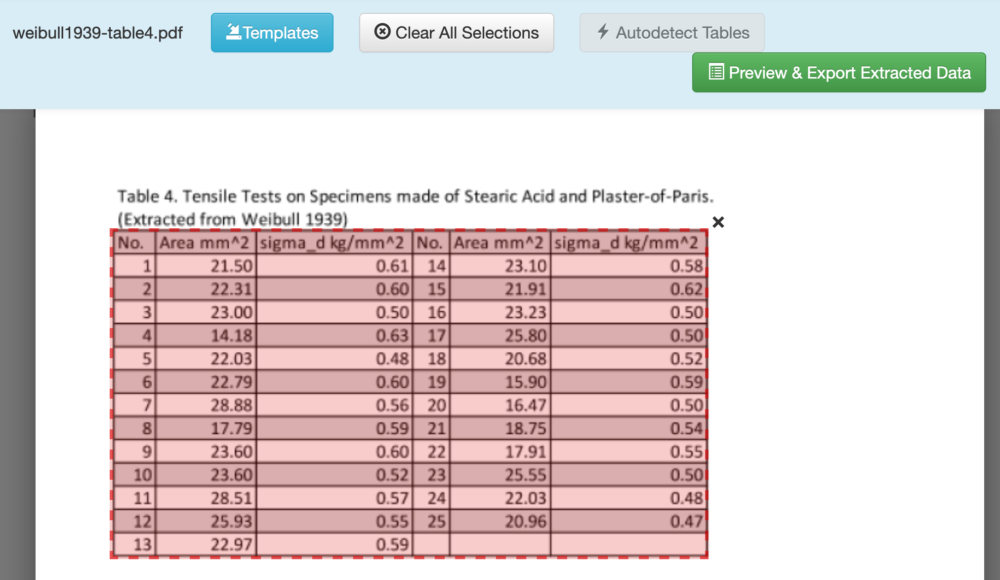

Data Extraction and Management¶
Author: Zachary del Rosario
Learning outcomes¶
By working through this exercise, you will be able to:
Prevent future data headaches by collecting data defensively
Extract data from tables in published documents with Tabula
Liberate data from graphs with WebPlotDigitizer
Designing Data Collection¶
Choosing columns¶
(TODO Agree on columns and formats before starting data collection)
Example 1: Poor data planning¶
Run |
Observation |
|---|---|
1 |
It worked |
2 |
It failed |
3 |
It worked |
Q1: Suppose you were reviewing data in this form; would you be able to answer the following questions? Why or why not?¶
How many observations were collected?
Yes, there are three observations.
What were the experimental settings for each observation?
No, these data were not recorded
Were all of the planned experiments run?
No, we don’t have any indication of the number of planned experiments
What would you do to resolve the issue with Observation 2?
It’s unclear what went wrong, so I wouldn’t know where to start!
Example 2: More details¶
Run |
Knob A |
Knob B |
Recorded Value |
Notes |
|---|---|---|---|---|
1 |
1.0 m/s |
2.3 kg |
1.6 eV |
|
2 |
1.0 mph |
10.0 g |
NA |
Sample did not survive characterization |
3 |
0.5 mph |
50.0 g |
1e-17 J |
Q2: Suppose you were reviewing data in this form; would you be able to answer the following questions? Why or why not?¶
What were the experimental settings for each observation?
Yes, we know the values for each knob
How do the experimental settings compare for each observation?
Yes, we have the values, but since they’re in different units, it’s difficult to make a comparison at-a-glance.
Were all of the planned experiments run?
No, we don’t have any indication of the number of planned experiments
What would you do to resolve the issue with Observation 2?
The sample didn’t survive characterization; we don’t have much to go on, but at least we know where in the process (characterization) the problem appeared!
Example 3: Even Better¶
Run |
Knob A (m/s) |
Knob B (g) |
Recorded Value (eV) |
Date |
Notes |
|---|---|---|---|---|---|
1 / 2 |
1.00 |
2.3e3 |
1.60 |
2021-08-11 |
- |
2 / 2 |
0.45 |
2.0e1 |
NA |
2021-08-11 |
Sample did not survive characterization |
1 / 1 |
0.22 |
5.0e1 |
62.42 |
2021-08-12 |
- |
Q3: Suppose you were reviewing data in this form; would you be able to answer the following questions? Why or why not?¶
How do the experimental settings compare for each observation?
Yes, we have the values, and now that they’re in common units it’s much easier to compare across cells.
Were all of the planned experiments run?
Yes, it seems that experiments were carried out over two days, and the experimentalist carried out all their planned experiments each day.
Tabula: Extracting tables from documents¶
Background: Tabula is a piece of software developed for journalists carrying out investigative reporting. It was developed with support from organizations like ProPublica and The New York Times. This tool is meant to help investigators parse unwieldy PDFs and liberate useful information.
Q4 Download and install Tabula; the webpage has installation instructions.¶
Note: Tabula’s interface is through a locally-hosted server; it should automatically open a browser window for Tabula. If it does not, then open http://localhost:8080/ after you’ve launched Tabula.
Q5 Download this example PDF and import it into Tabula for data extraction.¶

Click Browse to find the example PDF, click Import to load the file into Tabula, then click Extract Data to enter the data extraction interface.
Q6 Enter the Extraction menu, and drag-select a box to target the table of data.¶

Click and drag to draw a box around the data you want to extract. Make sure to exclude the Table title, and any other non-data text.
Q7 Once selected, click Preview & Export Extracted Data.¶

Q8 Choose between Stream and Lattice options to help Tabula extract the data correctly.¶

The Stream option looks for whitespace, while the Lattice option looks for vertical and horizontal bars that denote data entries. For this case, both options work fine.
Q9 Once satisfied, click Export to download the data.¶
Important caveat! Image-based PDF’s.¶
Tabula tends to work best with more modern, fully-digital documents. For PDF’s of older documents, you might get the following:

This means the PDF doesn’t have any digitized text in it; it’s just a scan of an old document. The Help tab in Tabula gives some suggestions on things you can try; for instance, the help page links to optical character recognition (OCR) machine learning tools you can use to pre-process an image into text data, which you can then treat with Tabula.